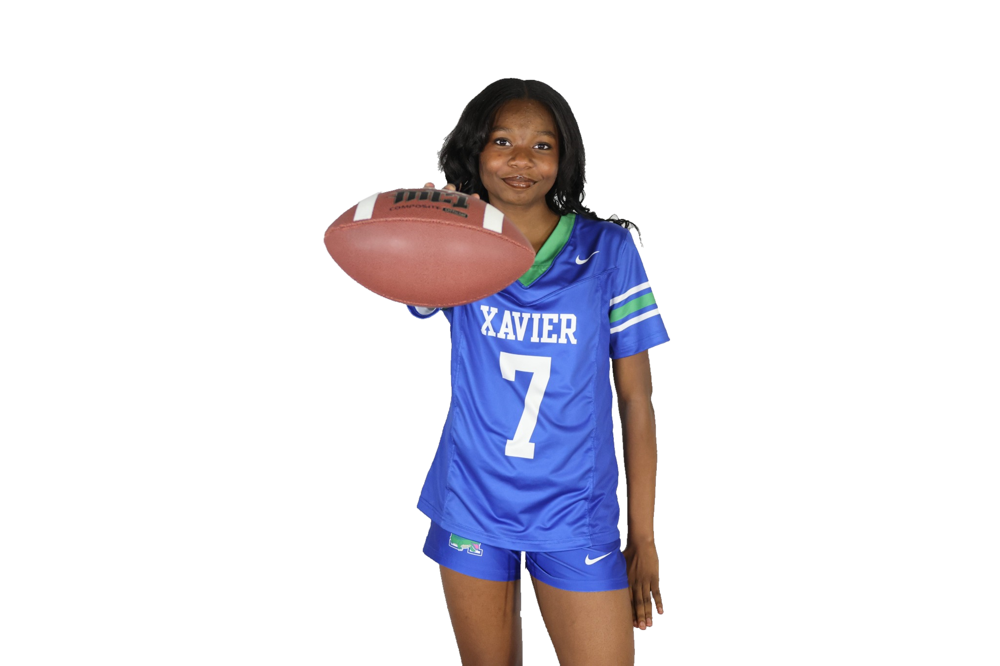

01Flag Football
12 sacks in five games.
L’s 2026 regular-season snapshot includes 12 sacks and 78 punt-return yards for Xavier College Preparatory.
12 sacks
Defensive contribution
2.4 sacks per game
Across the five games reported
78 yards
Punt returns
Family-reported statistics · 5 of 11 regular-season games played · Through October 9, 2026.
Also in this snapshot: 22 rushing yards and a 28-yard longest punt return.